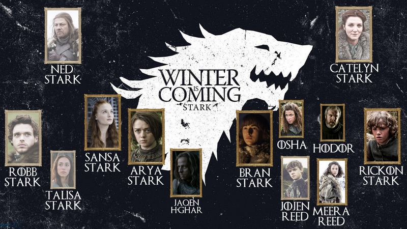
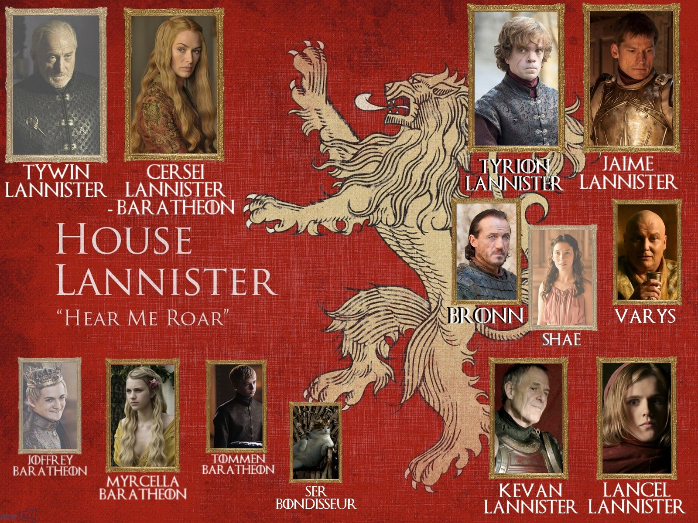
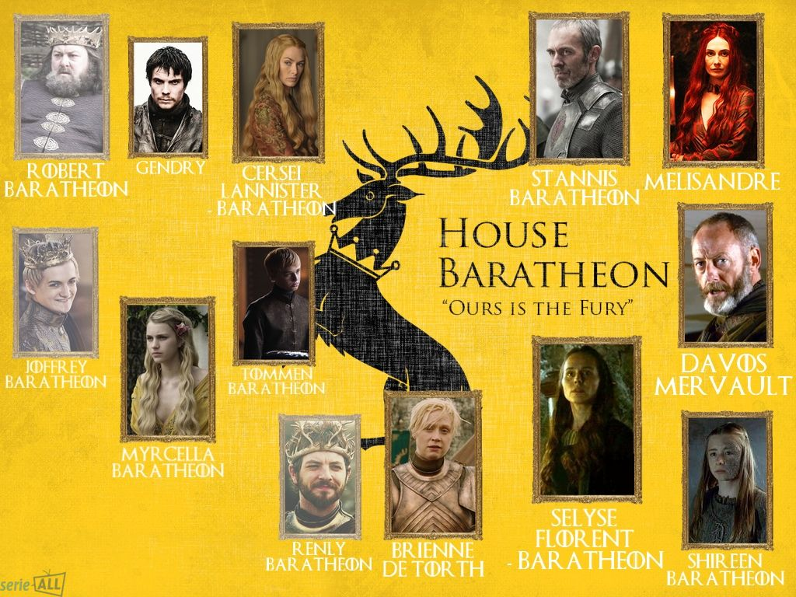
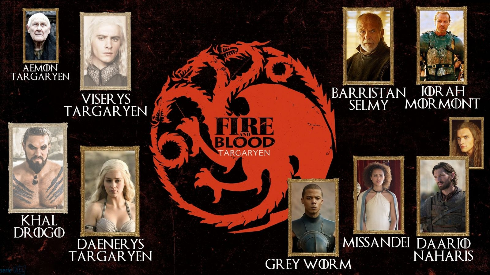

La Maison Stark.
La maison Stark dirige le Nord, la plus grande région de Westeros, s'étalant des tours de Walder Frey jusqu'au mur. Le sang des Premiers Hommes coule dans leurs veines. La famille siège à Winterfell, d'aussi loin que l'on peut se souvenir, on dit même qu'il doit "toujours y avoir un Stark à Winterfell". Chaque enfant Stark possédait un loup au début de la série. La maison est proche de la Garde de Nuit ainsi que des Tullys et sont principalement rivaux avec les Lannisters.
La Maison Lannister.
L'histoire de la maison Lannister remonte à l'âge des héros, lorsque Lann le futé aurait pris par la ruse la forteresse de Casterly Rock à la maison Castra, devenant Roi de l’Ouest jusqu’a l’arrivée des Targaryens. De part la profusion de mines d’or sur leurs terres les Lannister ont été la toujours été la maison la plus riche du royaume des sept couronnes et par conséquent l’une des puissantes. Les Lannisters s’identifient par leur blason (un lion) comme toutes les familles mais ont pour devise officieuse “un Lannister paie toujours ses dettes”, une phrase qui leur tient à coeur et qui est révélatrice de leur mode de pensée. Dans la série, la maison Lannister possède une position extrêmement dominante à la cour, puisque la Reine-mère, de nombreux conseillers et, dans les faits, le Roi sont issus de ses rangs. Néanmoins, de part leurs intrigues et leurs trahisons les Lannisters se sont attirés de nombreux ennemis, parfois à l’intérieur même de leur famille. Leur position est d’autant plus affaiblie que leurs rangs sont clairsemés et que Tywin ne possède aucun héritier officiel.
La Maison Baratheon.
L’une des huit grandes maisons de Westeros, la maison Barathéon règne sur les Terres de l’Orage, mais surtout sur le Trône de Fer - tout du moins officiellement - depuis que Robert Barathéon et Ned Stark menèrent la rébellion qui mit fin au règne millénaire des Targaryens, une quinzaine d’années avant le début de la série. Hélas, si Robert Barathéon était un chef de guerre charismatique quand il arriva triomphalement au pouvoir, il fut en revanche un roi calamiteux, peu intéressé par les affaires du royaume et ruinant peu à peu les caisses de la couronne. Sa mort, au cours de la saison 1, est à l’origine du chaos qui s’est abattu depuis sur Westeros, car sa succession ne fait pas l’unanimité. En effet, même s’ils restent officiellement ses enfants, Tommen, Myrcella et Joffrey Baratheon sont en réalité les fruits de l’inceste entre la reine Cersei et son frère jumeau Jaime Lannister. Par conséquent, les frères de Robert, Renly et Stannis Baratheon, sont également des successeurs possibles. Sans compter que la dynastie Baratheon est encore jeune, et que des enfants Targaryens sont toujours en vie, en exil sur Essos.
La Maison Arryn.
La maison Arryn est également l’une des huit grandes familles de Westeros et règne sur la région du Val d’Arryn, région montagneuse, isolée et imprenable, depuis leur forteresse des Eyrié. Le début de la série a vu la mort de son chef de famille, Jon Arryn, qui avait élevé Eddard Stark et Robert Barathéon et les avait aidé à mener la rébellion contre le roi fou, Aerys II Targaryen. Malgré leur position d’alliés “naturels” des Tully et des Stark, les Arryns ont fait le choix très controversé de rester neutres depuis le début du conflit entre les Starks et les Lannisters. Mais avec la mort de Lysa Arryn, tout pourrait bien changer… A noter, un amusant sport local : jeter les indélicats du haut de la “porte de la lune” et compter les secondes avant le grand “splatch” qui signent qu’ils se sont bien écrasés au sol.
La Maison Targaryen
La maison Targaryen est l’ancienne maison dirigeante de Westeros. Aegon le Conquérant, ses sœurs et ses Dragons ont envahi le Royaume des Sept Couronnes lors de la guerre de la Conquête. Le dragon à trois têtes de leur emblème représente Aegon le Conquérant et ses deux sœurs, Rhaenys et Visenya, mais aussi leurs trois dragons : Vhagar, Meraxès et Balerion. Le dernier roi Targaryen, Aerys II, surnommé le roi fou, fut renversé par Robert Baratheon. Les seuls héritiers restants étaient deux de ses jeunes enfants, Viserys et Daenerys. Les membres de la maison Targaryen se marient entre eux, ils aiment la chaleur, la consanguinité et prendre des bains brûlants tout nus. La dynastie targaryenne a laissé une bonne empreinte, puisque mis à part le règne d'Aerys II, leur règne a été globalement synonyme de paix.




